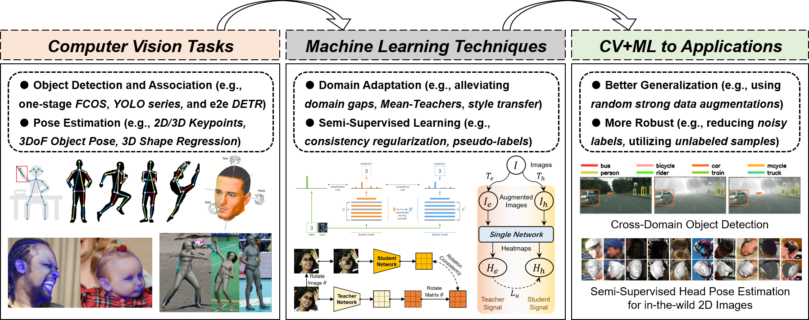

|
Huayi Zhou (周华毅) I'm now a Postdoctoral Researcher at The Chinese University of Hong Kong, Shenzhen (CUHK-SZ). My advisor is Prof. Kui Jia. Before that, I obtained my Master and PhD degrees at Shanghai Jiao Tong University (SJTU) majoring in Computer Science and Engineering in years 2017~2024, and Bachelor degree at Hunan University (HNU) majoring in Computer Science and Technology in years 2013~2017. My research interests lie in computer vision (e.g., detection, segmentation, and pose estimation), also combining with some machine learning techniques such as multi-task learning, domain adaptation, domain generalization and semi-supervised learning. Lately, I have been exploring vision-language-action based generalizable robot manipulation tasks. I am committed to pursuing simple yet efficient design, and designing data/label efficient learning. Most of my works are about inferring the physical world (location, association, pose, shape, etc) from RGB images. Email / Google Scholar / Semantic Scholar / Github / Zhihu |
{kind=link}
News
● [2025.04] Our work YOTO for Bimanual Robotic Manipulation is accepted by Robotics: Science and Systems (RSS) 2025.
|
Activities
● Conference Reviewer: ACMMM'2025, ICCV'2025, ICME'2025, CVPR'2025, ICLR'2025, AAAI'2025, ACCV'2024, ECCV'2024, ICME'2024, CVPR'2024, ICCV'2023, CVPR'2023, ECCV'2022
|
Research Summary |
{kind=link}
Publications |
|
You Only Teach Once: Learn One-Shot Bimanual Robotic Manipulation from Video Demonstrations
Huayi Zhou, Ruixiang Wang, Yunxin Tai, Yueci Deng, Guiliang Liu, Kui Jia Robotics: Science and Systems (RSS), 2025 Project / arXiv / Github TLDR: This work proposes the YOTO (You Only Teach Once), which can extract and then inject patterns of bimanual actions from as few as a single binocular observation of hand movements, and teach dual robot arms various complex tasks. |
|
|
Semi-Supervised Unconstrained Head Pose Estimation in the Wild
Huayi Zhou, Fei Jiang, Jin Yuan, Yong Rui, Hongtao Lu, Kui Jia arXiv, 2024 Project / arXiv / Github TLDR: We propose the first semi-supervised unconstrained head pose estimation (SemiUHPE) method, which can leverage a large amount of unlabeled wild head images. SemiUHPE is robust to estimate wild challenging heads (e.g., heavy blur, extreme illumination, severe occlusion, atypical pose, and invisible face). |
|
|
Boosting Semi-Supervised 2D Human Pose Estimation by Revisiting Data Augmentation and Consistency Training
Huayi Zhou, Mukun Luo, Fei Jiang, Yue Ding, Hongtao Lu arXiv, 2024 arXiv / Github TLDR: Our method MultiAugs contains two vital components: (1) New advanced collaborative augmentation combinations; (2) Multi-path predictions of strongly augment inputs with diverse augmentations. Either of them can help to boost the performance of Semi-Supervised 2D Human Pose Estimation. |
|
|
PBADet: A One-Stage Anchor-Free Approach for Part-Body Association
Zhongpai Gao, Huayi Zhou, Abhishek Sharma, Meng Zheng, Benjamin Planche, Terrence Chen, Ziyan Wu International Conference on Learning Representations (ICLR), 2024 Poster Paper / arXiv TLDR: This paper presents PBADet, a novel one-stage, anchor-free approach for part-body association detection. Building upon the anchor-free object representation across multi-scale feature maps, it introduces a singular part-to-body center offset that effectively encapsulates the relationship between parts and their parent bodies. |
|

|
BPJDet: Extended Object Representation for Generic Body-Part Joint Detection
Huayi Zhou, Fei Jiang, Jiaxin Si, Yue Ding, Hongtao Lu Transactions on Pattern Analysis and Machine Intelligence (TPAMI), 2024 Project / Paper / arXiv / Github TLDR: The journal version of BPJDet. It has various new functions (Multiple Body-Parts Joint Detection and two downstream applications including Body-Head for Accurate Crowd Counting and Body-Hand for Hand Contact Estimation) |
|
Contrast, Stylize and Adapt: Unsupervised Contrastive Learning Framework for Domain Adaptive Semantic Segmentation
Tianyu Li, Subhankar Roy, Huayi Zhou, Hongtao Lu, Stephane Lathuiliere IEEE/CVF Conference on Computer Vision and Pattern Recognition (CVPR) Workshops, 2023 Paper / arXiv / Github TLDR: To overcome the domain gap between synthetic and real-world datasets for semantic segmentation, this paper present CONtrastive FEaTure and pIxel alignment (CONFETI) for bridging the domain gap at both the pixel and feature levels. |
|
|
Body-Part Joint Detection and Association via Extended Object Representation
Huayi Zhou, Fei Jiang, Hongtao Lu IEEE International Conference on Multimedia and Expo (ICME), 2023 Oral, (Best Student Paper Runner Up Award) Project / Paper / arXiv / Github / News TLDR: A novel extended object representation that integrates the center location offsets of body or its parts, and construct a dense one-stage Body-Part Joint Detector (BPJDet). This design is simple yet efficient. |
|
|
StuArt: Individualized Classroom Observation of Students with Automatic Behavior Recognition And Tracking
Huayi Zhou, Fei Jiang, Jiaxin Si, Lili Xiong, Hongtao Lu IEEE International Conference on Acoustics, Speech and Signal Processing (ICASSP), 2023 Oral Project / Paper / arXiv / Github TLDR: StuArt is a novel automatic system designed for the individualized classroom observation. We proposed some pedagogical approaches in signal processing for K-12 education. (Note: StuArt is one of the key part of the project AIClass.) |
|
|
DirectMHP: Direct 2D Multi-Person Head Pose Estimation with Full-range Angles
Huayi Zhou, Fei Jiang, Hongtao Lu arXiv, 2023 Project / arXiv / Github TLDR: This paper focuses on the full-range Multi-Person Head Pose Estimation (MPHPE) problem. We firstly construct two benchmarks by extracting GT labels for head detection and head orientation from public datasets AGORA and CMU Panoptic. Then, we propose a direct end-to-end simple baseline named DirectMHP based on YOLOv5. |
|
|
SSDA-YOLO: Semi-supervised Domain Adaptive YOLO for Cross-Domain Object Detection
Huayi Zhou, Fei Jiang, Hongtao Lu Computer Vision and Image Understanding (CVIU), 2023 Paper / arXiv / Github TLDR: This paper presents a novel semi-supervised domain adaptive YOLO (SSDA-YOLO) based method to improve cross-domain detection performance by integrating the compact one-stage stronger detector YOLOv5 with domain adaptation. |
|
|
Who Are Raising Their Hands? Hand-Raiser Seeking Based on Object Detection and Pose Estimation
Huayi Zhou, Fei Jiang, Ruimin Shen Asian Conference on Machine Learning (ACML), 2018 Oral Paper TLDR: An automatic hand-raiser recognition algorithm to show who raise their hands in real classroom scenarios, which is of great importance for further analyzing the learning states of individuals. |
Experience |
|
The Chinese University of Hong Kong, Shenzhen,
Postdoctoral researcher in School of Data Science Advisor: Prof. Kui Jia 2024.7 - Present |
|
|
Shanghai Jiao Tong University,
Ph.D. student in Computer Science and Engineering Advisor: Prof. Hongtao Lu 2020.9 - 2024.06 |
|
|
Qualcomm Wireless Communication Technologies (Shenzhen, China),
Engineering Intern at AI Department, Machine Learning Group (MLGCN) Reporting to Dongyong Zhou, Senior Software Engineer 2019.6 - 2019.10 |
|
|
Shanghai Jiao Tong University,
Academic Master student in Computer Science and Engineering Advisor: Prof. Ruimin Shen 2017.9 - 2020.3 |
|
|
Hunan University,
Bachelor of Engineering in Computer Science and Technology 2013.9 - 2017.6 |
|
The template of this website is borrowed from Jonathan T. Barron. |